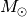
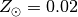

Using cosmic to run BSE¶
cosmic can evolve binaries for several different use cases. Below you’ll find examples to run a single binary system, multiple binary systems or a grid of binaries.
single binary¶
Below is the process to initialize and evolve a binary that could have formed a GW150914-like binary. First, import the modules in cosmic that initialize and evolve the binary.
In [1]: from cosmic.sample.initialbinarytable import InitialBinaryTable
In [2]: from cosmic.evolve import Evolve
To initialize a single binary, populate the SingleBinary method in the InitialBinaryTable class. Each initialized binary requires the following parameters:
m1 : ZAMS mass of the primary star in 
m2 : ZAMS mass of the secondary star in
porb : initial orbital period in days
ecc : initial eccentricity
tphysf : total evolution time of the binary in Myr
kstar1 : initial primary stellar type, following the BSE convention
kstar2 : initial secondary stellar type, following the BSE convention
metallicity : metallicity fraction (e.g. )
In [3]: single_binary = InitialBinaryTable.SingleBinary(m1=85.543645, m2=84.99784, porb=446.795757, ecc=0.448872, tphysf=13700.0, kstar1=1, kstar2=1, metallicity=0.002)
In [4]: print(single_binary)
kstar_1 kstar_2 mass1_binary mass2_binary porb ecc metallicity binfrac tphysf
0 1.0 1.0 85.543645 84.99784 446.795757 0.448872 0.002 1.0 13700.0
The flags for the various binary evolution prescriptions used in BSE also need to be set. Each flag is saved in the BSEDict dictionary. Note that the BSEDict only needs to be specified the first time a binary is evolved with cosmic or if you need to change the binary evolution prescriptions.
If you are unfamiliar with these prescriptions, it is highly advised to either run the defaults from the cosmic install (which are consistent with Rodriguez+2018 and Kremer+2018) or refer to Hurley+2002.
In [5]: BSEDict = {'xi': 0.5, 'bhflag': 1, 'neta': 0.5, 'windflag': 3, 'wdflag': 0, 'alpha1': 1.0, 'pts1': 0.001, 'pts3': 0.02, 'pts2': 0.01, 'epsnov': 0.001, 'hewind': 1.0, 'ck': -1000, 'bwind': 0.0, 'lambdaf': 1.0, 'mxns': 3.0, 'beta': -1.0, 'tflag': 1, 'acc2': 1.5, 'nsflag': 4, 'ceflag': 0, 'eddfac': 1.0, 'ifflag': 0, 'bconst': -3000, 'sigma': 265.0, 'gamma': -2.0, 'pisn': 45.0, 'natal_kick_array' : [-100.0,-100.0,-100.0,-100.0,-100.0,-100.0], 'bhsigmafrac' : 1.0, 'polar_kick_angle' : 90, 'qcrit_array' : [0.0,0.0,0.0,0.0,0.0,0.0,0.0,0.0,0.0,0.0,0.0,0.0,0.0,0.0,0.0,0.0], 'cekickflag' : 2, 'cehestarflag' : 0, 'cemergeflag' : 0, 'ecsn' : 2.5, 'ecsn_mlow' : 1.4, 'aic' : 1, 'ussn' : 0, 'sigmadiv' :-20.0, 'qcflag' : 3, 'eddlimflag' : 0, 'fprimc_array' : [2.0/21.0,2.0/21.0,2.0/21.0,2.0/21.0,2.0/21.0,2.0/21.0,2.0/21.0,2.0/21.0,2.0/21.0,2.0/21.0,2.0/21.0,2.0/21.0,2.0/21.0,2.0/21.0,2.0/21.0,2.0/21.0]}
Once the binary is initialized and the BSE model is set, the system is evolved with the the Evolve class, which calls the evolv2.f subroutine in the BSE source code.
In [6]: bpp, bcm, initC = Evolve.evolve(initialbinarytable=single_binary, BSEDict=BSEDict)
For every evolved binary system, BSE generates two arrays, which are stored as pandas DataFrames in cosmic:
bpp - contains binary parameters at important stages in the binary’s evolution, including stellar evolutionary phase changes or mass transfer episodes.
bcm - contains several binary parameters at user specified time steps during the binary’s evolution. The default setting in cosmic is to output the final stage of the binary at the evolution time specified by the user.
You can see the different parameters included in each DataFrame using the columns attribute of the DataFrame:
In [7]: print(bpp.columns)
Index(['tphys', 'mass_1', 'mass_2', 'kstar_1', 'kstar_2', 'sep', 'porb', 'ecc',
'RROL_1', 'RROL_2', 'evol_type', 'Vsys_1', 'Vsys_2', 'SNkick',
'SNtheta', 'aj_1', 'aj_2', 'tms_1', 'tms_2', 'massc_1', 'massc_2',
'rad_1', 'rad_2', 'bin_num'],
dtype='object')
In [8]: print(bcm.columns)
Index(['tphys', 'kstar_1', 'mass0_1', 'mass_1', 'lumin_1', 'rad_1', 'teff_1',
'massc_1', 'radc_1', 'menv_1', 'renv_1', 'epoch_1', 'ospin_1',
'deltam_1', 'RROL_1', 'kstar_2', 'mass0_2', 'mass_2', 'lumin_2',
'rad_2', 'teff_2', 'massc_2', 'radc_2', 'menv_2', 'renv_2', 'epoch_2',
'ospin_2', 'deltam_2', 'RROL_2', 'porb', 'sep', 'ecc', 'B_0_1', 'B_0_2',
'SNkick_1', 'SNkick_2', 'Vsys_final', 'SNtheta_final', 'SN_1', 'SN_2',
'bin_state', 'merger_type', 'bin_num'],
dtype='object')
The units are broadly consistent with BSE; masses, radii are in Solar units, temperatures are in log-Kelvin, luminosities are in log-Solar luminosity, orbital periods are in log-seconds, semi-major axes are in solar radii, and times are in units of Myr.
The evol_type column in bpp indicates the evolutionary change that occured for each line. The meaning of each number is described here, Evolve Type.
Each of the parameters in bpp or bcm can be accessed in the usual way for DataFrames.
In [9]: print(bpp.mass_1)
0 79.094933
0 78.936077
0 74.938003
0 62.496557
0 36.188609
0 35.959029
0 29.750532
0 26.775479
0 26.775482
0 26.775482
0 26.777384
0 26.783316
0 26.783316
0 26.783316
0 26.783316
0 26.783321
0 26.783321
0 26.783321
Name: mass_1, dtype: float64
In [10]: print(bpp[['mass_1', 'mass_2', 'kstar_1', 'kstar_2', 'sep', 'evol_type']])
mass_1 mass_2 kstar_1 kstar_2 sep evol_type
0 79.094933 78.667491 2.0 1.0 1473.875468 2.0
0 78.936077 78.678822 2.0 1.0 1467.357153 3.0
0 74.938003 82.622531 2.0 1.0 1403.570117 14.0
0 62.496557 94.987512 4.0 1.0 1502.124212 2.0
0 36.188609 120.165425 4.0 1.0 2110.880539 4.0
0 35.959029 120.284557 7.0 1.0 2107.818485 2.0
0 29.750532 118.328046 7.0 1.0 2224.066700 15.0
0 26.775479 118.328046 14.0 1.0 2270.409921 2.0
0 26.775482 95.640640 14.0 2.0 2690.410431 2.0
0 26.775482 95.639917 14.0 2.0 2690.426271 12.0
0 26.777384 95.437512 14.0 2.0 2694.181697 3.0
0 26.783316 45.675241 14.0 4.0 479.282047 2.0
0 26.783316 45.675241 14.0 4.0 479.282047 7.0
0 26.783316 45.424485 14.0 7.0 412.961798 8.0
0 26.783316 45.424485 14.0 7.0 412.961798 4.0
0 26.783321 36.278126 14.0 7.0 472.868733 16.0
0 26.783321 32.650313 14.0 14.0 503.608880 2.0
0 26.783321 32.650313 14.0 14.0 503.312138 10.0
multiple binaries¶
Multiple systems can also be initialized and evolved; below is an example for systems that could form GW150914 and GW170817 - like binaries.
In [11]: binary_set = InitialBinaryTable.MultipleBinary(m1=[100.0, 11.8], m2=[85.0, 11.1], porb=[10000.0,2211.0], ecc=[0.65,0.55], tphysf=[13700.0,13700.0], kstar1=[1,1], kstar2=[1,1], metallicity=[0.005,0.02])
In [12]: print(binary_set)
kstar_1 kstar_2 mass1_binary mass2_binary porb ecc metallicity binfrac tphysf
0 1.0 1.0 100.0 85.0 10000.0 0.65 0.005 1.0 13700.0
1 1.0 1.0 11.8 11.1 2211.0 0.55 0.020 1.0 13700.0
In [13]: bpp, bcm, initC = Evolve.evolve(initialbinarytable=binary_set, BSEDict=BSEDict)
Note that the BSEDict did not be reinitialized since the BSE model did not change.
As before, bpp, bcm, and initC are returned as pandas DataFrames which assign an index to each binary system we evolve. We can access each binary as follows
In [14]: print(bpp.loc[0])
tphys mass_1 mass_2 kstar_1 kstar_2 ... massc_1 massc_2 rad_1 rad_2 bin_num
0 3.537393 79.856408 74.601383 2.0 1.0 ... 35.614667 0.000000 50.062601 50.719287 0
0 3.540254 79.467829 74.600037 4.0 1.0 ... 36.326881 0.000000 1654.495522 50.975155 0
0 3.690710 56.899437 77.324114 4.0 2.0 ... 37.941472 34.097933 1958.021021 47.960822 0
0 3.693646 56.465653 77.033054 4.0 4.0 ... 37.972974 34.779822 1964.092842 1613.156443 0
0 3.816675 39.277256 63.265858 7.0 4.0 ... 0.000000 36.082256 2.215200 1809.318642 0
0 3.895830 34.701463 51.392680 7.0 4.0 ... 0.000000 36.920209 1.998783 1975.823119 0
0 3.895830 31.231317 51.392680 14.0 4.0 ... 31.231317 36.920213 0.000132 1975.823873 0
0 3.895830 31.231317 51.392680 14.0 4.0 ... 31.231317 36.920213 0.000132 1975.823873 0
0 3.985013 32.152215 38.015185 14.0 4.0 ... 32.152215 37.864338 0.000136 19.480787 0
0 3.996105 32.152216 37.978304 14.0 7.0 ... 32.152216 0.000000 0.000136 2.170012 0
0 4.057229 32.152216 34.009760 14.0 7.0 ... 32.152216 0.000000 0.000136 1.974595 0
0 4.057229 32.152216 30.608784 14.0 14.0 ... 32.152216 30.608784 0.000136 0.000130 0
0 13700.000000 32.152216 30.608784 14.0 14.0 ... 32.152216 30.608784 0.000136 0.000130 0
[13 rows x 24 columns]
In [15]: print(bcm.loc[0])
tphys kstar_1 mass0_1 mass_1 lumin_1 ... SN_1 SN_2 bin_state merger_type bin_num
0 0.346679 1.0 99.000000 99.000000 1.276936e+06 ... 0.0 0.0 0 -001 0
0 13700.000000 14.0 34.701463 32.152216 1.000000e-10 ... 1.0 1.0 0 -001 0
[2 rows x 43 columns]
In [16]: print(initC.loc[0])
kstar_1 1.000000
kstar_2 1.000000
mass1_binary 100.000000
mass2_binary 85.000000
porb 10000.000000
...
fprimc_11 0.095238
fprimc_12 0.095238
fprimc_13 0.095238
fprimc_14 0.095238
fprimc_15 0.095238
Name: 0, Length: 88, dtype: float64
In [17]: print(bpp.loc[1])
tphys mass_1 mass_2 kstar_1 kstar_2 ... massc_1 massc_2 rad_1 rad_2 bin_num
1 18.364415 11.520052 10.909115 2.0 1.0 ... 2.606170 0.000000 10.377378 9.154203 1
1 18.409054 11.515971 10.907684 3.0 1.0 ... 2.657025 0.000000 253.588958 9.201944 1
1 18.413279 11.514165 10.907761 4.0 1.0 ... 2.657136 0.000000 489.343727 9.206627 1
1 20.381291 10.909588 10.896085 4.0 2.0 ... 3.439131 2.417346 147.470050 9.978069 1
1 20.432119 10.887458 10.894033 4.0 3.0 ... 3.459328 2.465073 205.839856 229.140010 1
1 20.437847 10.884775 10.892412 4.0 4.0 ... 3.461604 2.465212 214.531781 450.055879 1
1 20.534215 10.828794 10.837118 5.0 4.0 ... 3.499896 2.497700 487.630678 401.151523 1
1 20.541357 10.821833 10.834715 5.0 4.0 ... 3.499896 2.500107 507.294619 398.158176 1
1 20.541357 10.821833 10.834715 5.0 4.0 ... 3.499896 2.500107 507.294619 398.158176 1
1 20.541357 3.499896 2.500107 8.0 7.0 ... 1.950729 0.000000 507.294619 398.158176 1
1 20.541357 3.499896 2.500107 8.0 7.0 ... 1.950729 0.000000 0.518342 0.389854 1
1 20.667965 3.397301 2.499276 8.0 7.0 ... 2.354506 0.000000 9.360846 0.394765 1
1 20.668140 3.397007 2.499314 8.0 7.0 ... 2.355254 0.000000 9.458086 0.394774 1
1 20.668140 1.277515 2.499314 13.0 7.0 ... 2.355254 0.000000 9.458086 0.394774 1
1 23.737838 1.277515 2.348143 13.0 8.0 ... 1.277515 1.140529 0.000014 0.373212 1
1 24.017469 1.277515 2.297315 13.0 8.0 ... 1.277515 1.462633 0.000014 17.908485 1
1 24.017469 1.277515 1.277515 13.0 13.0 ... 1.277515 1.277515 0.000014 0.000014 1
1 13700.000000 1.277515 1.277515 13.0 13.0 ... 1.277515 1.277515 0.000014 0.000014 1
[18 rows x 24 columns]
grid of binaries¶
Sometimes it is helpful to run a grid of initial binaries to explore how changing a single paramter affects the evolved binary. Here we evolve the same system that produces a GW150914-like binary, but run over several initial orbital periods spaced evenly in log space.
In [18]: n_grid = 10
In [19]: binary_grid = InitialBinaryTable.MultipleBinary(m1=np.ones(n_grid)*100.0, m2=np.ones(n_grid)*85.0, porb=np.logspace(3,5,n_grid), ecc=np.ones(n_grid)*0.65, tphysf=np.ones(n_grid)*13700.0, kstar1=np.ones(n_grid), kstar2=np.ones(n_grid), metallicity=np.ones(n_grid)*0.005)
In [20]: print(binary_grid)
kstar_1 kstar_2 mass1_binary mass2_binary porb ecc metallicity binfrac tphysf
0 1.0 1.0 100.0 85.0 1000.000000 0.65 0.005 1.0 13700.0
1 1.0 1.0 100.0 85.0 1668.100537 0.65 0.005 1.0 13700.0
2 1.0 1.0 100.0 85.0 2782.559402 0.65 0.005 1.0 13700.0
3 1.0 1.0 100.0 85.0 4641.588834 0.65 0.005 1.0 13700.0
4 1.0 1.0 100.0 85.0 7742.636827 0.65 0.005 1.0 13700.0
5 1.0 1.0 100.0 85.0 12915.496650 0.65 0.005 1.0 13700.0
6 1.0 1.0 100.0 85.0 21544.346900 0.65 0.005 1.0 13700.0
7 1.0 1.0 100.0 85.0 35938.136638 0.65 0.005 1.0 13700.0
8 1.0 1.0 100.0 85.0 59948.425032 0.65 0.005 1.0 13700.0
9 1.0 1.0 100.0 85.0 100000.000000 0.65 0.005 1.0 13700.0
In [21]: bpp, bcm, initC = Evolve.evolve(initialbinarytable=binary_grid, BSEDict=BSEDict)
In [22]: print(bpp)
tphys mass_1 mass_2 kstar_1 kstar_2 ... massc_1 massc_2 rad_1 rad_2 bin_num
0 3.537393 79.856416 74.601412 2.0 1.0 ... 35.614672 0.000000 50.062608 50.719313 0
0 3.539811 79.534315 74.618369 2.0 1.0 ... 36.216558 0.000000 962.019751 50.951009 0
0 3.539811 79.534315 74.618369 2.0 1.0 ... 36.216558 0.000000 962.019751 50.951009 0
0 3.539811 122.876845 74.618369 2.0 15.0 ... 64.710987 0.000000 962.019751 50.951009 0
0 3.540142 122.827267 0.000000 4.0 15.0 ... 64.908119 0.000000 2292.874181 50.951009 0
.. ... ... ... ... ... ... ... ... ... ... ...
9 3.951480 30.357821 35.777881 14.0 4.0 ... 30.357821 35.735648 0.000129 2.287981 9
9 3.955292 30.357821 35.774606 14.0 7.0 ... 30.357821 0.000000 0.000129 2.104858 9
9 4.058203 30.357821 30.387590 14.0 7.0 ... 30.357821 0.000000 0.000129 1.844541 9
9 4.058203 30.357821 27.348831 14.0 14.0 ... 30.357821 27.348831 0.000129 0.000116 9
9 13700.000000 30.357821 27.348831 14.0 14.0 ... 30.357821 27.348831 0.000129 0.000116 9
[134 rows x 24 columns]
In [23]: print(bcm)
tphys kstar_1 mass0_1 mass_1 lumin_1 ... SN_1 SN_2 bin_state merger_type bin_num
0 0.346679 1.0 99.000000 99.000000 1.276936e+06 ... 0.0 0.0 0 -001 0
0 13700.000000 15.0 122.876845 0.000000 3.971523e+07 ... 7.0 0.0 1 0201 0
1 0.346679 1.0 99.000000 99.000000 1.276936e+06 ... 0.0 0.0 0 -001 1
1 13700.000000 14.0 112.647935 40.500000 1.000000e-10 ... 6.0 0.0 1 0201 1
2 0.346679 1.0 99.000000 99.000000 1.276936e+06 ... 0.0 0.0 0 -001 2
2 13700.000000 15.0 24.562899 0.000000 1.000000e-10 ... 1.0 1.0 1 1414 2
3 0.346679 1.0 99.000000 99.000000 1.276936e+06 ... 0.0 0.0 0 -001 3
3 13700.000000 14.0 32.025861 29.857963 1.000000e-10 ... 1.0 1.0 0 -001 3
4 0.346679 1.0 99.000000 99.000000 1.276936e+06 ... 0.0 0.0 0 -001 4
4 13700.000000 14.0 35.093921 33.225253 1.000000e-10 ... 1.0 1.0 0 -001 4
5 0.346679 1.0 99.000000 99.000000 1.276936e+06 ... 0.0 0.0 0 -001 5
5 13700.000000 14.0 35.352695 32.318330 1.000000e-10 ... 1.0 1.0 0 -001 5
6 0.346679 1.0 99.000000 99.000000 1.276936e+06 ... 0.0 0.0 0 -001 6
6 13700.000000 14.0 34.195635 30.909654 1.000000e-10 ... 1.0 1.0 0 -001 6
7 0.346679 1.0 99.000000 99.000000 1.276936e+06 ... 0.0 0.0 0 -001 7
7 13700.000000 14.0 33.911260 30.578865 1.000000e-10 ... 1.0 1.0 0 -001 7
8 0.346679 1.0 99.000000 99.000000 1.276936e+06 ... 0.0 0.0 0 -001 8
8 13700.000000 14.0 33.784712 30.434553 1.000000e-10 ... 1.0 1.0 0 -001 8
9 0.346679 1.0 99.000000 99.000000 1.276936e+06 ... 0.0 0.0 0 -001 9
9 13700.000000 14.0 33.715573 30.357821 1.000000e-10 ... 1.0 1.0 0 -001 9
[20 rows x 43 columns]